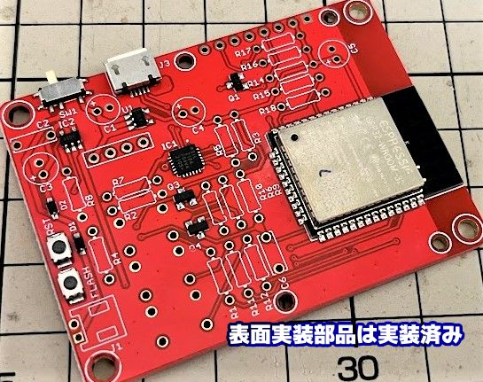
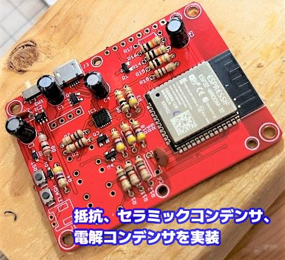
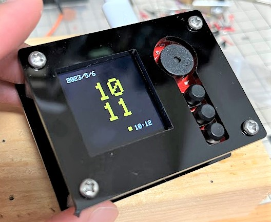

この記事はMakerfabsの提供でお届けします。
今回紹介するDIY ESP32 SmartClock KitはMakerfabsから提供いただいたものです。
（ですが、DIY ESP32 SmartClock KitはMakerfabsをレビューしたい！と言ったのは自分なので、Makerfabsが無理やりこの商品を押しているわけではなく、inajobの一押しアイテム！、という感じです。）
DIY ESP32 SmartClock KitはESP32をコアとしたシンプルなスマート時計ガジェットのDIYキットです。
仕様
仕様は以下の通り
- 1.44inch 128x128カラーTFT液晶
- コントローラはST7735
- ESP32-WROOM-32
- 技適がついているものなので、日本でも安心して利用できます
- 3.3Vレギュレーター SPX3819
- Micro USBポート
- USBシリアル変換IC CP2104
- 自動リセット回路
- トランジスタはS8050
- 自動リセット回路
- LiPo充電IC MCP73831
- 操作用タクトスイッチ 3個
- リセットスイッチ、書き込みスイッチ
- ブザー
- 450mAhのLiPoバッテリー
LiPoバッテリーについては、私の場合は、税関で没収されてしまいました、残念・・
製品に組み込まれたLiPoバッテリーは問題ないのですが、このようにDIYキットでむき出しのLiPoバッテリーが含まれている場合は、容量がそこまで多くなくても没収の対象となることがあるようです。
まぁLiPoバッテリーがなくてもUSB給電で動作を確認することができるので、今回はそのようにしました。
DIYキットということで、多くの部品は未実装の状態ですが、表面実装の部品については予めはんだ付けされた状態なので、組立作業はそこまで大変ではありません。

組み立て
部品表に従って、パーツをはんだ付けしていきます。背の低い部品から実装することで、はんだ付け前のパーツが落下することを防ぐことが出来ます。 このあたりのTipsは説明書のPDFにも記載されています。

自分は、抵抗、セッラミックコンデンサ、電解コンデンサの順に実装しました。 はんだ付け後、ニッパーで余った導線を切断して、実装完了です。

スペーサーとネジを使って、アクリルプレートを取り付けます。
六角形のスペーサーは液晶モジュールと近すぎて、向きによっては干渉してしまうようだったので、向きを合わせた上で、やや強引に固定しました。
動作確認
USBケーブルを差し込んで、電源スイッチをONにすると、液晶に文字が現れます。 指示に従いS1ボタンを3秒間長押しすることで、WiFiのAPモードが起動します。 パソコンなどでMakerfabs_apというSSIDのWiFiに接続し、Webブラウザから192.168.4.1にアクセスすることで、SSIDとパスフレーズを入力する画面が表示されます。
この設定が完了するとNTP経由で時計を合わせてくれます。

時計が起動した後はS1ボタンでアラーム時間を設定し、S3ボタンでアラームのON/OFFを制御できます。 さらにS1ボタンを押すとタイムゾーンも設定できます。
説明書によると更にS1ボタンを押すことで天気の情報を取得できるようでしたが、手元ではうまく動きませんでした。（これは、このガジェットが天気参照のためにアクセスしているWebサービスが停止してしまっていることが原因のようです）
Arduinoによる動作のカスタマイズ
ここまで紹介してきたように、このガジェットはインターネットで時刻合わせが行われる時計、として使えますが、USB経由でプログラムを書き換えることで自由に動作を変更出来ます。 極論を言えば時計ではなく、デジタルフォトフレームのようなものや、ゲームのようなものも動作させることが出来ます。
液晶もよく使われているST7735なので、ライブラリを使えば簡単に画面描画を伴うプログラムを作ることが出来ます。
まとめ
DIY ESP32 SmartClock KitはESP32を使ったシンプルなガジェットとして、似たようなESP32を使ったプロジェクトの設計をしている人の参考になるものだと感じました。
アクリル板とスペーサーを使った簡易的な筐体があるおかげで、ガジェットとしての完成度も高いものとなっています。

関連記事